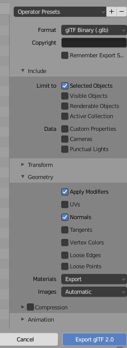

CS 424: Computer Graphics, Fall 2021
Lab 10: Raycaster (and Skybox)
The main point of this lab is to use a three.js raycaster. As a small secondary goal, you will use a skybox. The program that you work on will be a simple shooting game. What exactly it does, and whether it plays well as a game, is not particularly important. This is not meant to be a major assignment.
You will need the contents of the folder /classes/cs424/lab10-files, or you can download and extract this zip file if you prefer. You will work on the file shooting-gallery.html.
This lab is due, along with the Merry-Go-Round from Lab 8 next Thursday, November 4.
And don't forget that you need to select a final project by November 8!
Skybox
The sky-cubemap directory contains six files that define a cube texture. The files have names such as px.jpg for the view in the +X direction. You should create a cube texture from these files and use it as scene.background. (You can use it as an environment map on some of your objects, too, if you want to do that.)
Skyboxes are discussed in Section 5.3.4. You need to load the texture using a THREE.CubeTextureLoader. There is no real need to do anything in the case of error, so the code for loading takes the form:
loader = new THREE.CubeTextureLoader(); cubeTexture = loader.load( textureURLs, callback );
The parameter textureURLs must be an array of six strings giving the paths to the six image files, in the correct order. The callback function only needs to assign the cubeTexture to scene.background to make it appear in the scene.
Note, by the way, that the scene in this program is continually being rendered, so any change you make automatically becomes visible when the next frame is drawn.
Aim and Fire
The gun's aim in the program is controlled by the arrow keys. You should use the space bar to fire the gun, in the doKeyDown() method. The laser beam, which is the object named ray in the program, should only be visible for a very short time after the gun has been fired. Every THREE.Object3D has a property named visible to say whether it is visible. Set ray.visible to false to hide it, and set it to true to show it. Show the ray when the gun is fired. To make it go away, it is probably easiest to use the JavaScript function setTimeout. For example, to schedule something to happen in 100 milliseconds, you can just say
setTimeout( function() { ... }, 100 );
You might find other uses for timeouts in your game. For example, you might disable firing for a short time after each shot. Or, when an object is hit, you might change its color immediately, and then remove it from the scene a little later. But none of that is required.
When the gun is fired, you need to test whether it has hit anything. For that you need a raycaster. See the next section.
Raycaster
The program already has a THREE.Raycaster, in a global variable named raycaster, which is created in the init() method. You only need one raycaster for the program.
When the gun is fired, you need to cast a ray from the position of the gun in the direction that the gun is aiming. The position of the gun is just gun.position. But you need another THREE.Vector3 to define the direction. The way that I have found to do this is to start with a THREE.Vector3 that points in the original direction of the unrotated gun, (0,1,0), and then to apply the same rotation to that vector that is applied to the gun. To apply a rotation to a vector, you need a rotation matrix; three.js has a function that can build the rotation matrix from the gun's rotation angles.
rotationMatrix = new THREE.Matrix4(); // create a matrix (this could be done just once) rotationMatrix.makeRotationFromEuler(gun.rotation); // get the correct rotation matrix direction = new THREE.Vector3(0,1,0); // original unrotated direction direction.applyMatrix4(rotationMatrix); // apply the rotation matrix raycaster.set(gun.position, direction); // set the ray origin and direction
The raycaster is then ready for use for finding intersections with objects in the scene. Ray casting is discussed in the second part of Section 5.3.2.
Targets
You need something for the gun to shoot at. You should create objects, add them to the scene, and remove them when they are hit. Giving theem z-coordinate of about −80 seems to put the objects at a reasonable distance.
What the objects are and how you manage them is up to you. One idea is to add an object only for a short period of time, and have it disappear if it is not hit. Animated objects are another idea; update their position in updateForFrame(). They could, for example, bounce up and down, move in a line from left to right, or move back and forth changing direction at random. Remember that you are not required to do anything really complicated.
Very Optional: Use Models from Blender
For fun, you might want to try exporting one of the models that you made for Blender lab 2 and using it in your game. My own game is very minimal — I just placed some objects for the user to shoot at, with no animation — but I did use my airplane and snowflake from Blender:

If you want to do something similar, you can export your model in GLTF format and import it into your game using the same technique that was used to load the horse model in Lab 8. (You'll also need a copy of GLTFLoader.js from that lab, since it defines the THREE.GLTFLoader class that is used to load the model, and you will need to add a <script> element in the html file to import the script into your program.)
To export a model from Blender, select the object that you want to export. From the "File" menu, go to the "Export" submenu, and select "glTF 2.0 (.glb/.gltf)". When the file dialog opens, there will be a set of options for the GLTF export on the right. Here are the options that I used to export the airplane and snowflake:

Be sure to check "Selected Objects" so that you don't export every object in the scene. And if the object uses modifiers, check "Apply Modifiers"; otherwise, you will only get the original, unmodified object.
Assuming that you only export one object, when the file is loaded into three.js,
the object will be dataFromModel.scene.children[0], just like the horse model.
You can just add the object
to the scene, but it will probably have some transformations applied. I had to do
airplane.scale.set(1,1,1); airplane.position.set(0,0,0); airplane.rotation.set(0,0,0);
to see it in the scene. (I think it was originally below the ground.)
Another option is just to use the geometry from the model (airplane.geometry)
in a new THREE.Mesh. Eventually, that's what I did with the airplane since I wanted to
give it a different material. In any case, you will probably have to do some experimentation.